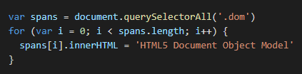
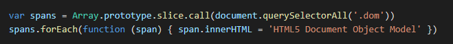
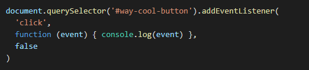

Raz Yusoff
Non-technical Blog - JS Fundamentals
An analogy to describe the differences between HTML and CSS
Imagine we lived in the matrix and you were visiting your local supermarket, notice how all the items have been laid out neatly and in an accessible manner, stacked on shelves, there are colourful signs and labels everywhere etc. Although the instruction on how to organise the layout and aesthetics of all the items can be included in the html document, it's best practice that that instruction on how to present the items to your eyes in coded in the stylesheet (usually as a css), and the actual as-yet-to-be dynamic contents are coded into the html document. The css stylesheet then targets those items and gives the matrix the instruction of how to present it to your virtual eyes and other senses in the matrix!
Explain control flow and loops using an example process from everyday life, for example 'waking up' or 'brushing your teeth'. (But not those ones)
The control flow is the order in which a code executes. By default that's just the order in which they've been coded, line by line. However this flow can be 'distrupted' by conditional statements (mostly in the form of functions) and loops, which can all be nested within one another. But fear not, once the funtion, conditional statement or loop is satisfied/resolved, the code continues to proceed along its default control flow.
To use an example process from everyday life... dressing up in the morning - everyone's usually got a set order in which they like to follow, such as: (1) put your undies on, (2) put your pants on, (3) put your shirt on, (4) walk out the door. But within that flow there could be set conditionals (functions and loops) that must be met before you can move from one item to the next, such as: under step (2) once you put your pants on, check yourself in the mirror and make sure it's tight and snug, if not tighten the jeans again and repeat until your 'tightness' conditions are met (this is analogous to a loop function). Once happy then move on to step (3).
Describe what the DOM is and an example of how you might interact with it
The DOM stands for Document Object Model. I guess it's best explained by breaking it down word for word actually:
- Document - is what we are interacting with (HTML, XML). Holds the static content of the web app
- Object - The document has been modelled into a js object, by taking the document elements and shoving it into a js object. Hence The 'document' keyword in javascript is of the datatype object. Technically any programming language, such as C++ or C#, can be used to target and interact with elements in the document, but most browser DOM's by default have laid out the standard framework for which js can target and interact with those items in a document. There is an innumerous number of predefined operators, or 'methods', in the DOM which makes this possible (more on this below)
document = { object } - Model - the representation of the document elements in javascript. Think about it like this: the real content of the element
<p id="cool">Hi</p>is in the html code but not actually in the js code. But that element is represented or 'modelled' in the js code by model lines such as:Let greeting = document.getElementsById("cool")querySelector, querySelectorAll, getElementsById, getElementsByClassName, getElementsByTagName and getElementsByName are common examples of predefined DOM methods that can be used in js code to target elements in the document. More on them below.
The DOM represents the document as nodes and objects; these nodes can be elements, attributes, text content, comments, document-related stuff, and various other things. HTML elements are at the end of a chain that starts with Node and continues with Element and HTMLElement before ending with a type (ie: HTMLDivElement, HTMLHeadingElement, etc.). The methods for manipulating HTML elements are introduced at some part of this chain.
For example, the object representing the HTML form element gets its name property from the HTMLFormElement interface but its className property from the HTMLElement interface. In both cases, the property you want is in that form object. In other words, you can target that element or node via different interfaces.
Common methods:
document.querySelector('p.blue')- returns an Element object representing the first element in the document that matches the specified set of CSS selectors, or null is returned if there are no matches. Find elements by tag name, ID, classes, or combining them e.g. 'p.blue'document.querySelectorAll()- non-live NodeList containing one Element object for each element that matches at least one of the specified selectors or an empty NodeList in case of no matches.
Nodelists look like arrays but they aren't. To convert we can use either of the following:

document.getElementById()- parameter is the html element ID. Returns an Element object describing the DOM element object matching the specified ID, or null if no matching element was found in the document.document.getElementsByClassName()- returns an array-like object (nodelist) of all child elements which have all of the given class name(s).document.getElementsByTagName()- returns an HTMLCollection (also a nodelist) of elements with the given tag name.document.getElementsByName()- returns a NodeList Collection of elements with a given name attribute in the document.
Other useful aspects to note include Event listeners. Here's a good reference list of DOM events. Example of an Event listener function:
Explain the difference between accessing data from arrays and objects
Arrays are a list of indexed data (with count stating from 0). Objects are a list of data that are indexed by a keyword (properties).
Explain what functions are and why they are useful
Functions carry out procedural work with data that doesn't necessarily have to flow with the default control flow of the whole code. They can be initiated and resolved via conditionals or called on directly within the overall code document, with or without input parameters, as and when needed. They are useful because they can be used to process data for any purpose really, whether to actually process mathematical information or to trigger visibily interactive responses on a webpage.